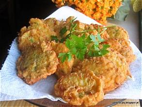
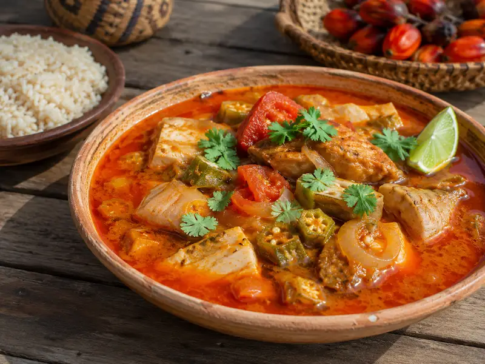
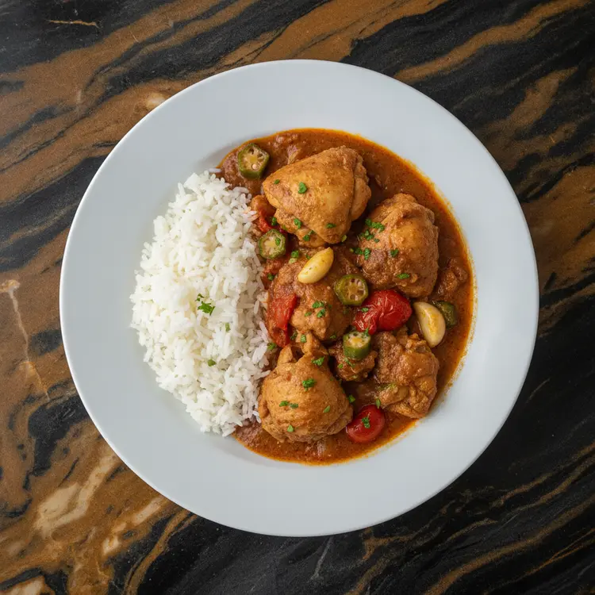
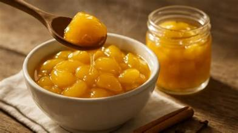
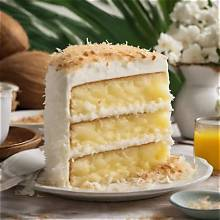
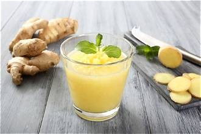
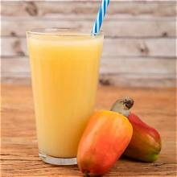

Entradas
Sopa de legumes
Legumes da época cozidos devagar, com um fio de óleo e um toque de piri-piri. Quentinha e leve, para começar bem.
Leva: batata, cenoura, abóbora, cebola, piri-piri
6,50 €
Pratos tradicionais da cozinha guineense, feitos com calma.
9 pratos
Entradas
Legumes da época cozidos devagar, com um fio de óleo e um toque de piri-piri. Quentinha e leve, para começar bem.
Leva: batata, cenoura, abóbora, cebola, piri-piri

Entradas
Pastéis estaladiços, com molho à parte.
Leva: peixe, batata, salsa, piri-piri

Pratos principais
Frango grelhado com limão, alho, cebola, especiarias e piri-piri. Chega com arroz e batata frita.
Leva: frango, limão, alho, cebola, piri-piri, arroz

Pratos principais
Galinha estufada em óleo de palma, com cebola e tomate. Come-se com arroz branco.
Leva: galinha, óleo de palma, cebola, tomate, arroz

Pratos principais
Amendoim moído devagar, com carne e um fio de piri-piri.
Leva: amendoim, carne, cebola, piri-piri, arroz

Sobremesas
Caju cozido com açúcar até ficar macio e brilhante. Serve-se frio.
Leva: caju, açúcar

Sobremesas
Fatia generosa, húmida, com coco ralado por cima.
Leva: coco, ovos, farinha, açúcar

Bebidas
Feito na casa, com gengibre fresco e limão. Pica um bocadinho.
Leva: gengibre, limão, açúcar

Bebidas
Doce e fresco, servido bem frio.
Leva: caju, água, açúcar
Não encontrámos nenhum prato com essa pesquisa. Experimente outra palavra ou escolha “Todos”.